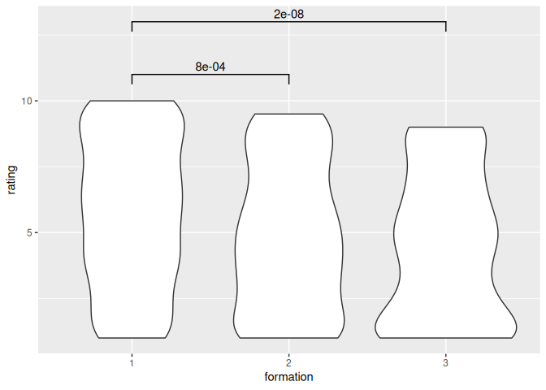

Analysis
In this document, we do the analysis presented in the paper.
Currently, the analysis uses fake data.
Setup¶
library(testthat)
library(ggsignif)
Reading the data¶
ratings <- readr::read_csv("ratings.csv", show_col_types = FALSE)
n_ratings <- nrow(ratings)
There are 1000 ratings.
Analysis¶
Connecting the ratings to the formations:
songs <- dplyr::select(heyahmama::get_songs(), cd_title, song_title)
n_songs <- nrow(songs)
There are 270 songs.
cds <- dplyr::select(heyahmama::get_cds(), cd_title, formation)
n_cds <- nrow(cds)
There are 22 CDs.
songs_per_formation <- dplyr::select(merge(songs, cds), song_title, formation)
testthat::expect_equal(n_songs, nrow(songs_per_formation))
knitr::kable(head(songs_per_formation))
| song_title | formation |
|---|---|
| 10.000 luchtballonnen | 3 |
| Kusjessoldaten | 3 |
| Als het binnen regent | 3 |
| Jodelee | 3 |
| Kus van de juf | 3 |
| Jij bent de bom! | 3 |
Add the formations to the ratings:
ratings_per_formation <- dplyr::select(merge(ratings, songs_per_formation), formation, rating)
testthat::expect_equal(n_ratings, nrow(ratings_per_formation))
ratings_per_formation$formation <- as.factor(ratings_per_formation$formation)
knitr::kable(head(ratings_per_formation))
| formation | rating |
|---|---|
| 1 | 5 |
| 1 | 4 |
| 1 | 1 |
| 1 | 8 |
| 1 | 5 |
| 3 | 9 |
Formations¶
There are two datasets:
- Dataset A: all 4 formations
- Dataset B: the first 3 formations
4 formations¶
Plot distribution of ratings¶
General plotting function:
plot_ratings <- function(ratings_per_formation) {
ggplot2::ggplot(
ratings_per_formation,
ggplot2::aes(x = formation, y = rating)
) + ggplot2::geom_violin()
}
Apply this to all ratings:
p <- plot_ratings(ratings_per_formation)
p
Order formations based on rating¶
Order formations by ratings:
get_ordered_average_rating_per_formation <- function(ratings_per_formation) {
n_formations <- length(unique(ratings_per_formation$formation))
average_rating_per_formation <-
ratings_per_formation |>
dplyr::group_by(formation) |>
dplyr::summarise(average_rating = mean(rating))
testthat::expect_equal(n_formations, nrow(average_rating_per_formation))
ordered_average_rating_per_formation <-
average_rating_per_formation |>
dplyr::arrange(dplyr::desc(average_rating))
testthat::expect_equal(n_formations, nrow(ordered_average_rating_per_formation))
ordered_average_rating_per_formation
}
knitr::kable(
get_ordered_average_rating_per_formation(
ratings_per_formation
)
)
| formation | average_rating |
|---|---|
| 1 | 5.730159 |
| 2 | 4.876316 |
| 3 | 4.441606 |
| 4 | 4.338608 |
Statistics¶
Do the formations have different ratings?
General function:
get_stats_table <- function(ratings_per_formation) {
n_formations <- length(unique(ratings_per_formation$formation))
n_combinations <- (n_formations * (n_formations - 1)) / 2
alpha <- 0.05 / n_combinations
p_values_table <- tibble::tibble(
a = rep(NA, n_combinations),
b = NA,
p = NA,
alpha = alpha
)
i <- 1
for (lhs in seq(1, n_formations - 1)) {
ratings_lhs <- ratings_per_formation[ratings_per_formation$formation == lhs, ]$rating
for (rhs in seq(lhs + 1, n_formations)) {
ratings_rhs <- ratings_per_formation[ratings_per_formation$formation == rhs, ]$rating
p_value <- wilcox.test(ratings_lhs, ratings_rhs, alternative = "two.sided")$p.value
testthat::expect_true(i >= 1)
testthat::expect_true(i <= nrow(p_values_table))
p_values_table$a[i] <- lhs
p_values_table$b[i] <- rhs
p_values_table$p[i] <- p_value
i <- i + 1
}
}
p_values_table$is_the_same <- p_values_table$p > alpha
p_values_table
}
Applying it here:
knitr::kable(get_stats_table(ratings_per_formation))
| a | b | p | alpha | is_the_same |
|---|---|---|---|---|
| 1 | 2 | 0.0008208 | 0.0083333 | FALSE |
| 1 | 3 | 0.0000000 | 0.0083333 | FALSE |
| 1 | 4 | 0.0000003 | 0.0083333 | FALSE |
| 2 | 3 | 0.0811276 | 0.0083333 | TRUE |
| 2 | 4 | 0.0922982 | 0.0083333 | TRUE |
| 3 | 4 | 0.8913167 | 0.0083333 | TRUE |
Plot with significance indicators¶
General function:
plot_ratings_with_indicators <- function(ratings_per_formation) {
p <- plot_ratings(ratings_per_formation)
t_all <- get_stats_table(ratings_per_formation)
t <- t_all[t_all$is_the_same == FALSE, ]
t$annotation <- scales::scientific(t$p, digits = 1)
t$y_position <- seq(
from = 11.0,
to = 11.0 + ((nrow(t) - 1) * 2.0),
by = 2.0
)
p + ggsignif::geom_signif(
data = t,
ggplot2::aes(
xmin = a,
xmax = b,
annotations = annotation,
y_position = y_position
),
manual = TRUE
)
}
To these ratings
plot_ratings_with_indicators(ratings_per_formation)
#> Warning in ggsignif::geom_signif(data = t, ggplot2::aes(xmin = a, xmax = b, :
#> Ignoring unknown aesthetics: xmin, xmax, annotations, and y_position

3 formations¶
t <- ratings_per_formation[ratings_per_formation$formation != 4, ]
p <- plot_ratings(t)
p

knitr::kable(
get_ordered_average_rating_per_formation(t)
)
| formation | average_rating |
|---|---|
| 1 | 5.730159 |
| 2 | 4.876316 |
| 3 | 4.441606 |
t <- ratings_per_formation[ratings_per_formation$formation != 4, ]
knitr::kable(get_stats_table(ratings_per_formation = t))
| a | b | p | alpha | is_the_same |
|---|---|---|---|---|
| 1 | 2 | 0.0008208 | 0.0166667 | FALSE |
| 1 | 3 | 0.0000000 | 0.0166667 | FALSE |
| 2 | 3 | 0.0811276 | 0.0166667 | TRUE |
plot_ratings_with_indicators(t)
#> Warning in ggsignif::geom_signif(data = t, ggplot2::aes(xmin = a, xmax = b, :
#> Ignoring unknown aesthetics: xmin, xmax, annotations, and y_position
